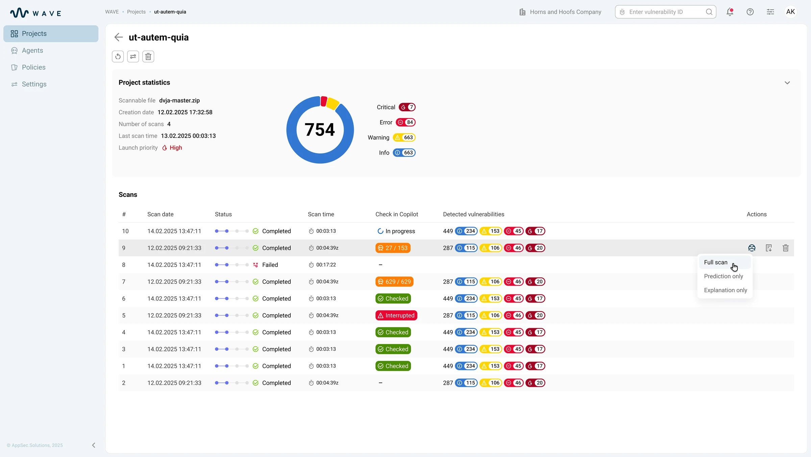

How I cut scan triage from 6–8 to 2–3 hours: AI vulnerability triage in Wave and CoPilot
Wave is AppSec Solutions’ main product for reviewing scan results. CoPilot is its AI module: it works both as a tab inside Wave and as a standalone product. I designed both, from launching an AI check to the analyst’s final decision.
- Role
- Sole designer of Wave and CoPilot, from brief to handoff
- Team
- 9 people: me (designer), PM, analyst, 2 frontend developers, 2 backend developers, 2 QA
- Product
- AppSec Solutions, cybersecurity, B2B SaaS, web
- Result
- ≈ −60% time to triage a large scan (from 6–8 to 2–3 hours); ≈ 2 in 3 findings closed without opening the code

Context
After every scan, analysts received hundreds of findings: real vulnerabilities mixed with false positives. Each one had to be opened and checked against its component, code paths and context. On large projects, triaging a single scan took 6–8 hours, and the bigger the volume, the higher the cost of a mistake: missing a real vulnerability or burning a day on a false one.
AI could speed up triage, but the main risk was turning it into yet another black box. At any moment, the interface had to answer three questions:
Research
To find where the process broke down, I held regular calls with analysts and walked through scenarios with the PM. We talked about how scan triage actually worked, not about the interface. The key insight: the analysis is asynchronous and probabilistic, and the interface has to show that honestly.
- A long process with no status erodes trust. Experts need to see which stage a check is at, what has been processed and where it failed, not a “magic” loader.
- An AI prediction is easy to mistake for a verdict. A machine estimate and a human-confirmed vulnerability have to be clearly separated.
- There are many findings and little expert time. Triage has to be fast, and the evidence for a decision has to live in one place.
- Some actions change future scans. Their consequences have to be shown before the action is applied.
- Edge states are the core experience. Failed, skipped, empty and partial states have to be designed as part of the product, not as exceptions.
Ключевые решенияKey decisions
Как показать AI-вердикт: один бейдж или два сигнала.How to show the AI verdict: one badge or two signals. Выбрала показывать вероятность и объяснение раздельно, а расхождение между ними оставлять видимым, — так аналитик проверяет логику, а не принимает вывод на веру. Отбросила единый бейдж «уязвимость / не уязвимость»: он прячет неопределённость, превращает AI в чёрный ящик и провоцирует слепое согласие.I chose to show probability and explanation separately and to keep any conflict between them visible, so the analyst checks the logic instead of taking the conclusion on faith. I rejected a single “vulnerable / not vulnerable” badge: it hides uncertainty, turns AI into a black box and invites blind agreement.
Глубина AI-проверки: всегда полный анализ или выбор режима.AI check depth: always a full analysis or a choice of mode. Выбрала три режима — Full scan, Prediction only, Explanation only — прямо из строки скана, потому что быстрый triage и глубокий разбор это разные задачи. Отбросила обязательный full scan для каждой находки: на сотнях находок это дорого по времени и избыточно для очевидных случаев.I chose three modes — Full scan, Prediction only, Explanation only — right from the scan row, because fast triage and deep review are different jobs. I rejected a mandatory full scan for every finding: across hundreds of findings it is expensive in time and redundant for obvious cases.
Кто принимает финальное решение: AI или человек.Who makes the final call: AI or a human. Выбрала оставить решение за аналитиком: AI готовит вердикт и evidence, но подтверждает, отклоняет или игнорирует находку человек, и это фиксируется в истории решений. Отбросила авто-закрытие находок по порогу вероятности: его нельзя защитить на аудите, а один false negative — это пропущенная реальная уязвимость.I chose to keep the decision with the analyst: AI prepares the verdict and evidence, but a human confirms, rejects or ignores the finding, and that is recorded in the decision history. I rejected auto-closing findings by a probability threshold: it can't be defended in an audit, and a single false negative is a missed real vulnerability.
Part 1
Wave: a workspace for scan triage
Единая платформа — split-screen workspace вместо переходов между страницами:One platform — a split-screen workspace instead of page-to-page navigation: список отчётов остаётся слева, детали и действия открываются справа, поэтому аналитик разбирает находки, не теряя общий контекст. Слева видно прогресс, прогноз, число проблем и дату по каждому отчёту; справа собраны рекомендации, severity, список уязвимостей, evidence и triage-действия.the report list stays on the left while details and actions open on the right, so the analyst triages findings without losing the overall context. The left panel shows progress, prediction, issue count and date per report; the right panel brings together recommendations, severity, the vulnerability list, evidence and triage actions.
Статус AI-проверки на уровне проекта и каждого скана:AI check status at the project and per-scan level: в таблице сканов сразу видно, где AI-проверка не запускалась, где идёт анализ, что завершено и где проверка прервалась.the scans table immediately shows where the AI check hasn't run, where analysis is in progress, what is completed and where the check was interrupted.

Выбор глубины проверки: Full scan, Prediction only, Explanation only:Choosing the check depth: Full scan, Prediction only, Explanation only: из строки скана команда выбирает полную проверку, только prediction или только explanation. Так интерфейс поддерживает и быстрый triage, и глубокую проверку.from a scan row the team picks a full check, prediction only or explanation only. This way the interface supports both fast triage and deep review.

Prediction и explanation: два сигнала вместо одного вердикта:Prediction and explanation: two signals instead of one verdict: во вкладке CoPilot вердикт не спрятан в один бейдж: аналитик видит вероятность, объяснение и paths к коду. Если сигналы расходятся, конфликт остаётся видимым.in the CoPilot tab the verdict isn't hidden in a single badge — the analyst sees the probability, the explanation and paths to code. If the signals diverge, the conflict stays visible.


Part 2
CoPilot: what happens inside an AI check
Модель сценарияMapping the workflow
Я строила опыт вокруг реального decision flow, а не вокруг отдельных экранов. Это разделило продукт на два режима: monitoring — понять состояние системы; reviewing — оценить результат и принять решение. I structured the experience around the actual decision flow rather than individual screens. This separated two modes: monitoring — understanding the system state; reviewing — evaluating the result and making a decision.
01 Контроль до запуска проверки Giving users control before processing starts
Разные форматы данных и режимы анализа влияют на результат. Вместо того чтобы прятать эти параметры в настройках, я собрала значимые решения в один понятный setup: выбрать исходный отчёт, определить режим проверки и запустить анализ. Different data formats and analysis modes affect the result. Instead of hiding those options in settings, I grouped the meaningful choices into one setup step: select the source report, choose the check mode and start the analysis.

02 Прозрачный asynchronous processing Making asynchronous processing visible
Обычный progress bar скрывал бы слишком много. Если обработка замедлится или остановится, эксперт не поймёт, нужно ждать или вмешаться. Поэтому я представила pipeline явно и определила семантические состояния для каждого этапа. A generic progress bar would hide too much. If processing slowed down or stopped, an expert would not know whether to wait or intervene. I represented the pipeline explicitly and defined semantic states for every stage.
Waiting · In progress · Completed · Skipped · Failed · Broken


03 От результата к investigation Moving from a result to an investigation
Summary помогает сориентироваться, но решение требует evidence. В detailed view я выстроила иерархию между тем, что предполагает система, что реально найдено, какой статус уже присвоен и какое действие доступно дальше. A summary helps with orientation, but a decision requires evidence. In the detailed view I created a hierarchy between what the system predicts, what was actually found, the current review status and the action available next.
- system predictionsystem prediction
- finding + technical parametersfinding + technical parameters
- review state and contextreview state and context
- next expert actionnext expert action


AI предлагает. Эксперт решает.AI suggests. The expert decides.
04 Human in the loop Keeping the human in the loop
Автоматическая классификация не должна выглядеть как окончательный verdict. Я разделила prediction и человеческое решение как два разных объекта: система помогает сузить внимание и собрать evidence, но confirm / decline / ignore делает эксперт. In the interface, AI narrows the focus and gathers evidence, but only the expert can confirm, decline or ignore a finding. Every decision is saved to the history, so the review can be reconstructed and defended in an audit.

05 Действия с последствиями для будущих сканов Designing for actions with future consequences
Ignore влияет не только на текущий экран: объект может быть исключён из последующих проверок. Поэтому я отделила такое действие от обычного dismiss, добавила явное подтверждение последствий и отдельный feedback state после применения. Ignore affects more than the current screen: an object may be excluded from later checks. I therefore treated it differently from a simple dismiss, added explicit confirmation of the consequence and a separate feedback state after the action is applied.
Intent → Confirmation → System feedback


Beyond the happy pathBeyond the happy path
Для асинхронного security-продукта edge cases — это основной опыт, а не редкие исключения. Я описала состояния active, waiting, completed, skipped, failed, broken, empty и zero-value и использовала одну логику на уровне pipeline, отчёта и отдельной находки. For an asynchronous security product, edge cases are part of the primary experience. I defined active, waiting, completed, skipped, failed, broken, empty and zero-value states and reused the same logic across the pipeline, the report and an individual finding.
System thinkingSystem thinking
Количество комбинаций состояний быстро делает screen-by-screen подход неуправляемым. Поэтому я проектировала не отдельные экраны, а набор семантических patterns для processing stages, connectors, counters, severity и validation states. The number of state combinations quickly makes a screen-by-screen approach unmanageable. I designed semantic patterns for processing stages, connectors, counters, severity and validation states instead of solving every screen independently.
Состояние должно не просто выглядеть иначе — у него должно быть однозначное продуктовое значение.A state should not just look different — it needs a clear product meaning.

Result
- ≈ −60% времени на разбор большого скана≈ −60% time to triage a large scan — с ~6–8 ч до ~2–3 ч: prediction и explanation отсеивают false positive до открытия кода.— from ~6–8 h to ~2–3 h: prediction and explanation filter out false positives before opening the code.
- ≈ 2 из 3 находок закрываются без открытия кода≈ 2 in 3 findings closed without opening the code — вероятность, объяснение и paths стоят рядом, поэтому очевидные закрываются прямо по вердикту.— probability, explanation and paths sit side by side, so the obvious ones are closed straight on the verdict.
- 100% решений прослеживаемы:100% of decisions are traceable: каждый вердикт подтверждается, отклоняется или игнорируется человеком с опорой на explanation, paths и общий след решений — разбор можно защитить на аудите.every verdict is confirmed, rejected or ignored by a human based on the explanation, paths and the overall decision trail — the triage can be defended in an audit.
- A single system of 8 states follows the same logic across three levels: processing, report and finding. Engineering got one specification instead of separate mockups for every combination.
- Safe actions with consequences. “Ignore” has its own flow with confirmation and feedback, because it affects future scans.
Что я вынеслаWhat I learned
Сложность не исчезает, когда мы упрощаем интерфейс — её нужно структурировать. Самая важная часть этой работы была не в том, чтобы уменьшить число состояний, а в том, чтобы определить их смысл, связи и последствия достаточно чётко для уверенного решения пользователя. Complexity does not disappear when we simplify an interface — it has to be structured. The most useful design work was not reducing the number of states, but defining their meaning, relationships and consequences clearly enough for users to make confident decisions. Triage got faster not because AI decides for people, but because analysts can see what a conclusion is based on and no longer re-check everything by hand.